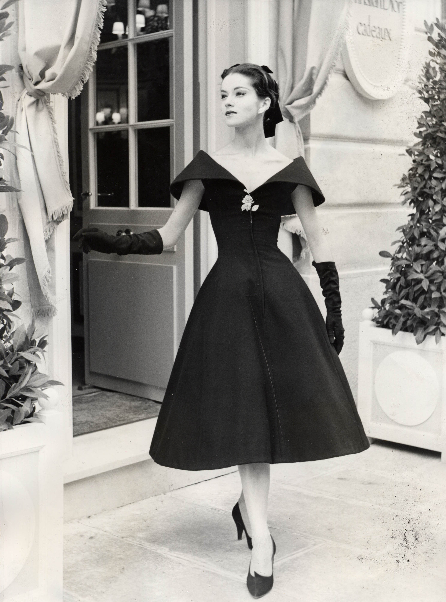
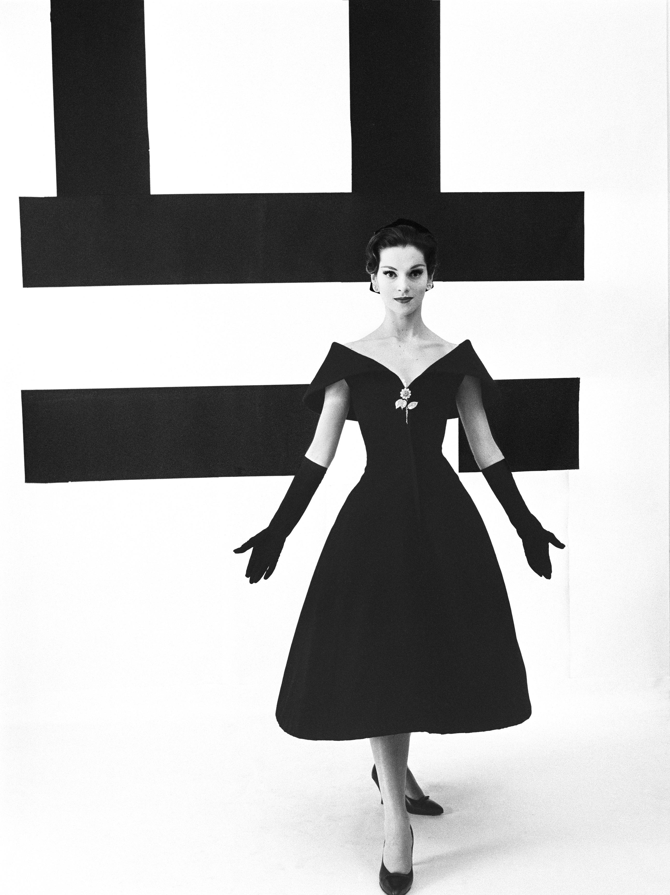

Charte
Toutes les chartes mentionnaient les modèles de chaque collection par catégorie, le nom des personnes les ayant réalisés, le nom des mannequins, et comprenaient des échantillons de tissu. On pouvait ainsi répartir équitablement le travail dans les ateliers et les mannequins avaient le temps de se changer lors des présentations quotidiennes.
Collection Dior Héritage, Paris


© Association Willy Maywald / ADAGP, Paris / SODRAC, Montréal (2017)

© Les Éditions Jalou « L’Officiel 1957 »

© William Klein

*

Ci-dessus : Les coutures latérales sont collées.
* Photo Laziz Hamani
 *
*
*
*
.. un des secrets de la couture – une robe bien coupée est une robe peu coupée.
— Christian Dior, 1956